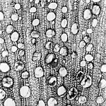
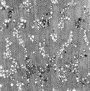
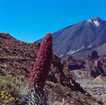
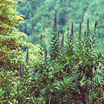
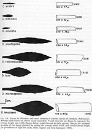
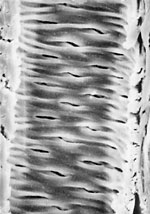
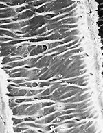
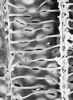
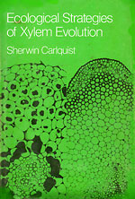

|
 |

{kind=link}

{kind=link}

{kind=link}

{kind=link}

{kind=link}

{kind=link}

{kind=link}
{kind=link}

The vessels of Prostanthera rotundifolia have a simple type of helical sculpture: narrow thickenings that curve around the vessel walls.
{kind=link}
ECOLOGICAL WOOD ANATOMY
How did ecological wood anatomy come into being? I liked field work when I was an undergraduate at U. C. Berkeley, collecting Eriophyllum to count chromosome numbers. I also liked laboratory work. When my interests took me to wood anatomy, (along with other things) in the Fitchia thesis, I didn’t see any reason why I shouldn’t do field work and do lab work on the same organisms. I had done the field work that got me the chromosome material for the study of Eriophyllum and allied genera, and I had also done the chromosome studies, it seemed logical. Why not the same with wood anatomy?
Little did I realize that this was heresy. People who studied wood anatomy at that time wore lab coats, were rarely seen outdoors, and had no idea where their material came from. In fact, their material mostly came from little boards in wood collections, and most of these wood collections (“xylaria”) were in forestry institutes that maintained such collections because they studied useful and potentially useful woods. Trees were cut down by field botanists and dried. Somebody in the forestry institute converted these logs into little boards a few inches wide and long—so that they could be stored uniformly in drawers designed for the little boards, all of a specific size. There may be records (variously reliable) of localities (sometimes just the country in which the collection was made), but there are no records of the kind of habitat where the plants grew. Cool or hot, wet or dry, shady or sunny--no records of those things. But because I collected much of the material on which I have worked as a wood anatomist, I knew precisely where these plants grew, how big they were—all kinds of information that turned out to be important to me.
The importance of studying the right group of plants. One might think that the value of knowing such information would lead other wood anatomists to collect their own material. But they haven’t done so, with a very few admirable exceptions. To be sure, travel takes money. But money to get materials for studies in wood anatomy was easy for me to get—others could do the same thing, I’m sure. I have even grown some of the plants from which I took wood samples for studies.
Wood anatomists have long known that different species had different woods. One sees this as early as Nehemiah Grew’s “The Anatomy of Vegetables Begun” (1672). In the 19th century, there was information that showed that wood of oaks was different from that or maples or willows. Different kinds of trees, different patterns, one could identify wood. And so studies on wood anatomy were constructed on how those patterns related to the taxonomic system. But did wood of some plants relate to their ecology? Did rain forest trees typically have wood different from that of desert shrubs? There was virtually no literature on this point in the 1950s. But as I surveyed the sunflower family (Asteraceae), tribe by tribe, I began to see patterns. The patterns didn’t relate to the classification system of the family. The patterns related to ecology and growth form, and were so clear that I had to express them when I finished my survey of the woods of that family and in 1966 I published a summary, “Wood anatomy of Compositae: a summary, with comments on factors controlling wood evolution.” [ PDF ]. This is really the landmark paper in ecological wood anatomy, because the sunflower family is essentially uniform in terms of level of evolutionary advancement of wood anatomy, and all its wood diversity is attributable to diversity in ecology and in plant form. Like a uniform experimental material put into various conditions and allowed to adapt to them over geological time. A perfect group in which to demonstrate ecological wood anatomy, although I hadn’t realized that when I began. I did gradually realize that during my tribe-by-tribe survey of wood anatomy of Asteraceae (= Compositae). In my 1959 paper on Helenieae, I said, “A sensitive or rapid specialization with relation to particular ecological conditions would explain why closely related species (e.g., Eriophyllum confertiflorum and E. nevinii) show different features on wood anatomy.” In my 1962 paper on wood anatomy of Senecioneae, I identified vessel characteristics as reflecting ecological differences: “The dry-country or desert-inhabiting Senecioneae show the highest degree of specialization. These specializations are much the same as in xerophytic Astereae (Carlquist 1960), Heliantheae (Carlquist, 1958), and Helenieae (Carlquist, 1959). Narrow vessels, including presence of vascular tracheids, large groupings of vessels…are all found in such species…”
The importance of collecting one’s own materials in the field. In the 1966 paper, I clearly correlated narrower vessels, larger groupings of vessels, shorter vessel element length, and presence of helical thickenings in vessels with xerophytic habitats (the reverse trends in plants of mesic habitats). The correlations with rainfall were very clear and consistent. And the 1966 paper was based on quantitative and qualitative data on wood anatomy from 328 species of 141 genera! How could anyone doubt that the 1966 paper began ecological wood anatomy as a field? A large proportion of those species I had collected myself, so I knew the habitats clearly. Correlations with habit are also clearly evident in the 1966 paper—trees, herbs, shrubs, etc--and all of the conclusions seem remarkably applicable today. The idea that secondary woodiness had occurred in the family, and that tree-composites were derived from shrubs, and that the rosette-tree Senecio species were derived from nonwoody plants, were radical idea in those day, although I proposed them in my 1962 paper on wood anatomy of Senecioneae.. But today, the validity of such ideas has been proven by trees based on DNA data. Also, one should note that not only did I sample from a wide range of habitats from desert to tropical forest (Asteraceae are rather amazing in their ecological range), the plants in the sampling ranged from annuals to trees. The wood anatomy of Asteraceae is rather uniform in terms of its basic plan. Asteraceae, the largest family of flowering plants (other than, perhaps, orchids) has spread into an amazingly wide range of habitats all over the world. If one studied a family composed only of woody species, and with a confined ecological range, like maples or laurels or hollies, one would see with such clarity or diversity how wood evolves with respect to ecology and growth form. One has to choose a group with a wide range in these features, collect known portions of plants, know the sizes of those plants, and most importantly, know exactly where they grow. That’s why the conclusions in the 1966 study were revolutionary. Specimens in xylaria certainly are valuable and have their uses, but they in the processing of their archiving, they are separated from knowledge of their environment. Some xylarium specimens can be connected to herbarium specimens (many cannot be), and those herbarium specimens may bear locality data that can be converted into longitude and altitude, but those data are not a good substitute for knowledge of the environments from which the woods came.
In group after group. The paper that began ecological wood anatomy, the 1966 “Wood anatomy of Compositae: a summary, with factors controlling wood evolution” [ PDF ] dealt with an ideal group of plants for analysis, the Asteraceae (= Compositae). Perhaps the most amazing examples are in the Madiinae (see Ecological Wood Anatomy), especially Dubautia [ PDF ]. Within each tribe of Asteraceae, however, examples can be found. Does this hold true for other families? Yes. Echium, a genus of Boraginaceae, has changed from herbaceous to woody in the Canary Islands and Madeira, and has radiated into various habitats on those islands. My 1970 paper on Echium (wood-anatomy-of-echium_1970) states that “Conceding that Echium as a whole has relatively short vessel elements, the gamut does correlate with moisture, from very short in the alpine E. wildpretii (= E. bourgeauanum) to long in the laurel-forest species, E. pininana and E. candicans. Average diameter of vessels in a sample is likewise a good indicator of mesomorphy and xeromorphy. This figure is lowest for E. wildpretii, highest for E. pininana. Nearly all the species have growth rings the sharpness of which corresponds to severity of climate (particularly seasonality of rainfall) in the habitat of the respective species.” Woody members of the crucifer family (Brassicaceae) from the same islands shows similar trends, as shown in my 1971 paper [ PDF ], although the crucifers do not extend into humid forests. In the Hawaiian Islands, a genus of Euphorbiaceae, Chamaesyce, has radiated from habitats near the shore inland into wet rain forest with more than 250 mm. of rain. As shown in my 1970 paper (Wood-anatomy-of-hawaiian,-macaronesian_1970 -- did not find?) [ PDF ] on Euphorbiaceae—Chamaesyce at that time was included in Euphorbia—the vessel diameter and vessel element length in cloud forest are more than double those in dryland Hawaiian localities.
If the vessel dimension patterns of a family are related to ecology in a single genus, are they paralleled by leaf sizes and shapes that also relate to ecology? Yes, as demonstrated by a page from the 1974 “Island Biology” that compares vessel dimensions characteristic of species of the Hawaiian genus Dubautia (Asteraceae) with leaf sizes and shapes of those species. That illustration has an interesting significance, because it shows that the relationship between leaf characteristics (broad, thin, in humid shady areas; narrow, thick in sunny arid areas) and vessel elements not only exist, but they validate the ecological interpretations of vessel elements.
Synthesis in book form. By 1972, my work in ecological wood anatomy had progressed far enough so that I thought of doing a kind of exploration article in the field, based on original information. Although it now seems amusing, I submitted this as a paper to the journal “Evolution.” The editor, Harlan Lewis, kindly persuaded me to think beyond the confines of that journal (if that sounds like a rejection, it probably was, but he never made the situation seem like a rejection). So I recast the paper as a book, “Ecological Strategies of Xylem Evolution,” which was published by University of California Press in 1975. The book was both a review of what I had learned and a forecast of what might be found. As such, it’s a questionable document, but it did advance the field, which is the only good purpose of a book in science. (Some workers would like to terminate a field when they publish a scientific book, but opening one up seems to me much the more valuable enterprise).
In all of the papers I have done on wood anatomy, a concern for ecological wood anatomy is present, at least from 1959 onwards. It now seems impossible that botanists once thought that leaves, habit, roots—all could be interpreted in terms of ecology, but that wood was irrelevant, and woods of different species are just different. When plants speciate, they adapt to new ecological niches, as Levin has said, and so are they going to adapt in terms of some leaf characters only? Woody plants are going to adapt in every respect related to water economy. And although wood anatomists were hesitant to accept the idea (because they didn’t want to have to bear the burden of ecological interpretations), wood is a tool of the water economy of a plant (and mechanical structure of a plant), and has a design functional in terms of any given plant’s water economy. In addition to the 1975 book, “Ecological Strategies of Xylem Evolution,” I wrote a 1980 paper extending these concepts. Growth ring types were explored and categorized in that paper. Everybody mentions that wide vessels in earlywood facilitate high rates of conduction, but then why are there narrow vessels in latewood? I hypothesized (1975), that narrow vessels in latewood embolized less readily and therefore had a selective value in latewood. A radical idea! In 1980 [ PDF ], I proposed a classification of growth rings based on all relevant factors. Such people as Martin Zimmermann at Harvard Forest didn’t think there was anything to this idea, nor did he think that shorter vessel element length had any function at all in providing conductive safety. My idea that narrow vessels are safe during drought because they are less likely to embolize (fill with air) during dry periods has been validated by Stephen Davis and his student Hargrave.
The problem with “Ecological Strategies of Xylem Evolution” was that it didn’t use experimental techniques of physiologists (although it cited their work), nor did it consider include comments on wood identification (the focus of many wood anatomists). Thus. The book had a mixed approach—but isn’t synthesis a good idea? The book was based on the concept that wood is a functioning structure, and that therefore the patterns one observes represent functional patterns, not records of past histories. There may be different adaptations to the same environment—a wild onion may grow alongside an oak tree, but obviously the two have different types of conductive tissue. How and why they are different and how the conductive systems of those and many other different plants are adapted to their forms and habitats—that is the vision of “Ecological Strategies of Xylem Evolution.” Too big a vision? Sure, but isn’t it better to have a comprehensive vision into which pieces can fit than no vision at all? Plant anatomy in those days (and to an alarming extent, still) was a series of descriptions of what cell types which plants had where. Plant anatomy was a field in which one could look at structure and forget about the function of the structure--one just described what one saw! I hope that plant anatomy has changed….
Speaking of wild onions, or of other plants with bulbs, like tulips or daffodils—they have vessels in roots only. Only tracheids are present in the bulbs and flowering stalks of these, however. One of a number of interesting patterns in monocot xylem. Vernon Cheadle made a career out of studying the xylem of monocotyledons, which don’t have wood, but definitely have vessels and tracheids. He described which monocots have vessels in which organs of the plant, and what the overall trends of specialization in the vessels looked like. Cheadle’s work is good as far as it goes, but he never wanted to talk about correlations with ecology. That’s rather curious, considering that Cheadle collected his own material in quite a number of countries. When I graphically interpreted his data in terms of ecology in “Ecological Strategies of Xylem Evolution,” his response was that ecological interpretation should have waited until the data were more complete. (On that basis, Darwin should have waited for more information before claiming that natural selection was the basis for evolution of the living world). Cheadle was probably defensive precisely because he realized that he could have and should have developed a synthesis of xylem with ecology in monocots. There are always hidden messages in what people say and, more importantly, don’t say. Vernon Cheadle wanted to continue doing research while performing the immensely demanding job of Chancellor at the University of California at Santa Barbara, and while he can be admired for maintaining his research while in that position, such an arrangement undoubtedly posed limitations for his research. Interestingly, in 1955, I said to I. W. Bailey that I thought that ecology had to be the driving force behind wood evolution. “What else could there be?” was his reply. I. W. Bailey spent his life as a professor, coming to the Harvard campus in a clean suit and tie. Unfortunately, wearing such clothes prevent one from observing ecology. He knew wood anatomy as seen with a microscope, but he didn’t know the plants firsthand in the field.
One chapter in ”Ecological Strategies of Xylem Evolution” dealt with phloem. This chapter has been, to the best of my knowledge, overlooked by everyone. To be sure, one would not expect a chapter on phloem in a book on xylem. The purpose of the chapter was to place phloem in relation to the evolution of xylem. Some workers (notably Zahur) had thought that trends in phloem evolution paralleled those in xylem. They really do not. One can find scalariform sieve plates in plants with very specialized xylem (simple perforation plates) (Fitchia). Structure of sieve plates and length of sieve-tube elements are passive results of what happens in the xylem. In woody dicots, the controlling factor is the length of fusiform cambial initials. In turn, the length of the fusiform cambial initial is governed by adaptive characteristics of secondary xylem cells. Long vessel elements, long tracheids, short vessel elements—there are functional reasons for those respective quantitative expressions. (A long tracheid or vessel element has more overlap with the next such cell above or below it, increasing conductive surface; shorter vessel elements tend to confine air embolisms to smaller portions of the conductive system). Cell lengths in sieve-tube elements are thus merely a reflection of what is happening in the secondary xylem.
Tracing ideas in science back to their point of origin isn’t easy. One must know—and have available—considerable bodies of literature. One must compare a number of books and papers of particular eras. In earlier decades, knowing the origins of ideas in science and who added what or modified what was considered an essential part of good scholarship. Perhaps the demands of science today are too great for this goal to be achieved. In any case, few if any will bother to identify the ideas that were originated in “Ecological Strategies of Xylem Evolution.” Most scientists don’t expect ideas to originate in books. They expect original ideas to appear only in papers, and they expect those papers to be in major journals only. (Never mind that most of Darwin’s ideas were first published in his books….).
An ecological measuring stick for woods. In 1977, I wrote, jointly with Larry DeBuhr, a paper [ PDF ] on woods of Penaeaceae, a family largely from the Cape region of South Africa. I had collected the woods there in 1973. In the context of this paper, I invented a ratio regarding vessel dimensions. The best version I called a Mesomorphy Ratio: vessel diameter times vessel element length divided by number of vessels per sq. mm (as seen in a transection). Martin Zimmermann and his students thought that there was no merit in doing this, because Zimmermann had shown that conductiveness in xylem is proportional to the fourth power of vessel diameter. Zimmermann thought only in terms of the vessels as designs for rapidity of water movement. He didn’t conceptualize how narrower vessels, as in desert shrubs (not found in the Harvard Forest where he worked!) or in latewood, might work in providing conductive safety. Species with narrow vessels tend to have more redundancy in the conductive system (because narrower vessels tend to be more numerous per unit area than wide vessels), usually an advantage where conductive safety is concerned. Narrow vessels more cavitation resistance than wide ones. So in fact, although the Mesomorphy Ratio doesn’t correspond to any particular physiological feature, it does represent an adaptive fact: wood is a compromise between conductive efficiency and conductive safety. Not infrequently within the same wood (earlywood vs. latewood). When applied to any particular group of plants, the Mesomorphy Ratio proves to be a very sensitive indicator of where along the compromise between conductive efficiency and safety any particular wood lies—even though the Ratio is an entirely arbitrary construct.
A different mode of comparison: floras. In 1974, I collected wood samples from particular areas of Western Australia. I wanted to see whether one could find correlations between moisture availability and wood characteristics, particular vessel element dimensions. Western Australia has a clear gradient in rainfall, greatest in the southwestern corner (where there is a rain forest: more than 200 cm of rain) and progressively lower going northwards and eastwards into desert areas from there. The number of wood samples was not large, but the trends were clear. Although the study made a good paper in 1977 [ PDF ], I realized that more extensive data were needed to show more. My 1985 paper with David Hoekman [ PDF ] on the wood anatomy of southern Californian woody plants gathered an enormous amount of data together and showed that on a floristic basis, one can see how different patterns are, in fact, represented on particular pieces of ground and thus function successfully in particular regimens of water availability. Although every last species in the woody flora of southern California was not collected, data for many species were recorded, and David Hoekman was able to project the accumulated data into a picture of what the entirety of the woody flora would be if every species had been studied. The important thing about this paper was not only its comprehensiveness in terms of species numbers, but the range of ecology explored. In Claremont, I was living in a geographical area that ranged from coast to alpine habitats 3,500 m high, from desert flats to riparian woodland. Even moist deciduous forest is represented in the form of some woody families like Aceraceae and Cornaceae. An intricate series of dryland habitats is present: coastal sage with its often drought-deciduous shrubs, and chaparral with its mostly evergreen foliage. If one looks for ecological wood anatomy on the basis of a geographical area rather on the basis of a genus or family, southern California forms one of the best areas in the world for analyzing the role of ecology in shaping the ways in which wood anatomy evolves. The Carlquist and Hoekman (1985) data suggested many conclusions, both within the confines of that paper, and in others since, notably on the role of vasicentric tracheids [ PDF ]. The data continues to be useful, as shown in the work by Rosell et al (2007, Bot. Jour. Linnean Soc. 154:331-351).
Someone is going to say at this point—shouldn’t we do experiments to find out how wood cells function? And the answer is, of course, yes. When I was writing “Ecological Strategies of Xylem Evolution,” little experimental work on conduction in woods had been done. Martin Zimmermann at the Harvard Forest was starting to do that, when he died prematurely. Frank Ewers, John Sperry, Mel Tyree, Stephen Davis, and Uwe Hacke have, among others, carried on that work and done amazing things (I’m sorry if I have omitted the names of pertinent workers here). I like to think that the comparative approach provided ideas. How would one know what experiments to do without ideas? Seeing wood anatomy under a microscope is like seeing the results of a giant evolutionary experiment, where the cells types and sizes are telling you how the plant works. I liked to think that wood physiology was like one end of a bridge and comparative wood anatomy was like the other, and that eventually they would be connected and that there would be a continuum between those approaches. I think that that has happened, and is happening. Wood physiology is so demanding that one can’t do that and at the same time examine huge vistas of wood anatomy. Comprehensive knowledge of both fields is all but impossible. But there should be mutual appreciation and use of ideas—and willingness to look at pertinent literature from various disciplines. I believe that “Ecological Strategies of Xylem Evolution” as well as some of my papers have been raided for ideas by wood physiologists, although the book doesn’t get mentioned by them a great deal. Wood physiologists (what few there were in 1975) undoubtedly regarded the book as providing material both speculative on the one hand and obvious (or wrong) on the other. Supposedly obvious things are mentioned more rarely in science than one might think, and speculation is just a dirty word for a useful hypothesis (if one has a good idea, it’s a hypothesis; if a rival scientist has a good idea, it’s a speculation). So if the book was speculative as well as obvious, I’m happy with that. Good books in science should go out of date because they inspire more work which renders them obsolete.